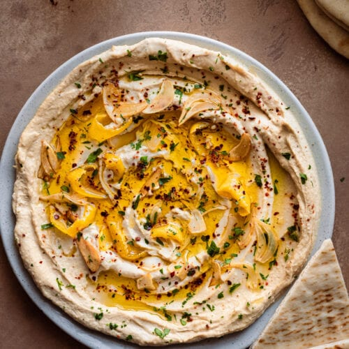

Hummus

Description
This recipe is a traditional
chickpea dip.
Many different versions of the dip exist, from
smooth to creamy, the possibilities are limitless.
In this recipe, I will show how to make a smooth
hummus that everyone will enjoy. Feel free to mix
ingredients and try your own version.
Ingredients
- Chickpeas
- Tahini
- Lemon juice
- Salt
- Ice Water
Steps
- Soak chickpeas overnight
- In the morning, drain and rinse chickpeas
- Cook chickpeas with some baking soda
- Blend chickpeas with a little cooking liquid, tahini,
lemon juice, and salt.
- Add ice or ice water until smooth
- Serve with warm bread or as a dip for veggies